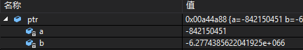
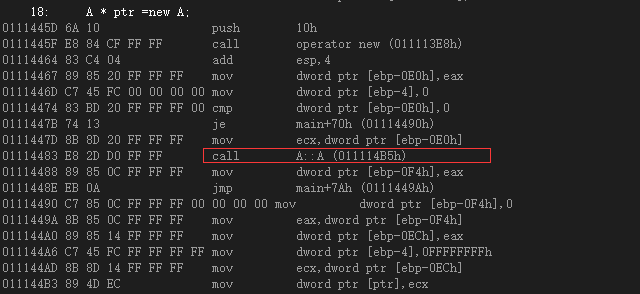

概述：
| 序号 | 不同点 | new/delete | malloc/free |
|---|---|---|---|
| 1 | 申请内存的位置 | 自由存储区 | 堆 |
| 2 | 内存分配成功时返回值 | 返回对象类型的指针，无需进行类型转换 | 返回的是void *，需要通过强制类型转换将void *转换成我们需要的类型 |
| 3 | 内存分配失败时返回值 | 抛出bad_malloc异常，不会返回NULL | 返回NULL |
| 4 | 分配内存的大小 | 由编译器根据类型计算得出 | 必须显式指定字节数 |
| 5 | 调用构造函数/析构函数 | 调用 | 不调用 |
| 6 | 处理数组 | 有处理数组的new[]/delete[] | 需要用户计算数组的大小后进行内存分配 |
| 7 | 相互调用 | new和delete可以通过malloc/free实现 | 不能调用new |
| 8 | 是否允许函数重载 | 允许 | 不允许 |
| 9 | 能否重新分配内存（内存扩容） | 无法直观的处理 | 可以使用realloc简单完成 |
| 10 | 分配内存时内存不足时 | 客户能够指定处理函数或者重新制定分配器 | 无法通过用户代码处理 |
1.申请的内存所在位置
new操作符从自由存储区上为对象动态分配内存空间，而malloc从堆上动态分配内存。
自由存储区是C++基于new操作符的一个抽象概念，凡是通过new操作符进行内存申请，该内存即为自由存储区。而堆是操作系统中的术语，是操作系统所维护的一块特殊内存，用于程序的内存动态分配，C语言使用malloc从堆上分配内存，使用free释放已分配的对应内存。
那么自由存储区是否能够是堆（问题等价于new是否能在堆上动态分配内存），这取决于operator new 的实现细节。自由存储区不仅可以是堆，还可以是静态存储区，这都看operator new在哪里为对象分配内存。
特别的，new甚至可以不为对象分配内存！定位new的功能可以办到这一点：
new (place_address) type place_address为一个指针，代表一块内存的地址。当使用上面这种仅以一个地址调用new操作符时，new操作符调用特殊的operator new，也就是下面这个版本：
void * operator new (size_t,void *) //不允许重定义这个版本的operator new 这个operator new不分配任何的内存，它只是简单地返回指针实参，然后右new表达式负责在place_address指定的地址进行对象的初始化工作。
2.返回类型安全性
new操作符内存分配成功时，返回的是对象类型的指针，类型严格与对象匹配，无须进行类型转换，故new是符合类型安全性的操作符。而malloc内存分配成功则是返回void * ，需要通过强制类型转换将void*指针转换成我们需要的类型。
类型安全很大程度上可以等价于内存安全，类型安全的代码不会试图方法自己没被授权的内存区域。关于C++的类型安全性可说的又有很多了。
3.内存分配失败时的返回值
new内存分配失败时，会抛出bad_alloc异常，它不会返回NULL；malloc分配内存失败时返回NULL。
在使用C语言时，我们习惯在malloc分配内存后判断分配是否成功：
int *a = (int *)malloc ( sizeof (int ));
if(NULL == a)
{
...
}
else
{
...
}从C语言走入C++阵营的新手可能会把这个习惯带入C++：
int * a = new int();
if(NULL == a)
{
...
}
else
{
...
}
实际上这样做一点意义也没有，因为new根本不会返回NULL，而且程序能够执行到if语句已经说明内存分配成功了，如果失败早就抛异常了。正确的做法应该是使用异常机制：
try
{
int *a = new int();
}
catch (bad_alloc)
{
...
}4.是否指定内存大小
使用new操作符申请内存分配时无须指定内存块的大小，编译器会根据类型信息自行计算，而malloc则需要显式地指出所需内存的尺寸。
5.是否调用构造/析构函数
使用new操作符来分配对象内存时会经历三个步骤： 第一步：调用operator new 函数（对于数组是operator new[]）分配一块足够大的，原始的，未命名的内存空间以便存储特定类型的对象。 第二步：编译器运行相应的构造函数以构造对象，并为其传入初值。 第三部：对象构造完成后，返回一个指向该对象的指针。
使用delete操作符来释放对象内存时会经历两个步骤： 第一步：调用对象的析构函数。 第二步：编译器调用operator delete(或operator delete[])函数释放内存空间。
总之来说，new/delete会调用对象的构造函数/析构函数以完成对象的构造/析构。而malloc则不会。
如果你不嫌啰嗦可以看下我的例子：
class A
{
public:
A() :a(1), b(1.11){}
private:
int a;
double b;
};
int main()
{
A * ptr = (A*)malloc(sizeof(A));
return 0;
}
在return处设置断点，观看ptr所指内存的内容：

可以看出A的默认构造函数并没有被调用，因为数据成员a,b的值并没有得到初始化，这也是上面我为什么说使用malloc/free来处理C++的自定义类型不合适，其实不止自定义类型，标准库中凡是需要构造/析构的类型通通不合适。
而使用new来分配对象时：
int main()
{
A * ptr = new A;
}
查看程序生成的汇编代码可以发现，A的默认构造函数被调用了：

6.对数组的处理
C++提供了new[]与delete[]来专门处理数组类型:
A * ptr = new A[10];//分配10个A对象
使用new[]分配的内存必须使用delete[]进行释放：
delete [] ptr;
new对数组的支持体现在它会分别调用构造函数函数初始化每一个数组元素，释放对象时为每个对象调用析构函数。注意delete[]要与new[]配套使用，不然会找出数组对象部分释放的现象，造成内存泄漏。
至于malloc，它并不知道你在这块内存上要放的是数组还是啥别的东西，反正它只给你一块原始的内存，再给你个内存的地址就完事。所以如果要动态分配一个数组的内存，还需要我们手动自定数组的大小：
int * ptr = (int *) malloc( sizeof(int) * 10 );//分配一个10个int元素的数组
7.是否可以相互调用
operator new /operator delete的实现可以基于malloc，而malloc的实现不可以去调用new。
下面是编写operator new /operator delete 的一种简单方式，其他版本也与之类似：
void * operator new (sieze_t size)
{
if(void * mem = malloc(size)
return mem;
else
throw bad_alloc();
}
void operator delete(void *mem) noexcept
{
free(mem);
}8.是否可以被重载
opeartor new /operator delete可以被重载。
标准库是定义了operator new函数和operator delete函数的8个重载版本：
//这些版本可能抛出异常
void * operator new(size_t);
void * operator new[](size_t);
void * operator delete (void * )noexcept;
void * operator delete[](void *0）noexcept;
//这些版本承诺不抛出异常
void * operator new(size_t ,nothrow_t&) noexcept;
void * operator new[](size_t, nothrow_t& );
void * operator delete (void *,nothrow_t& )noexcept;
void * operator delete[](void *0,nothrow_t& ）noexcept;我们可以自定义上面函数版本中的任意一个，前提是自定义版本必须位于全局作用域或者类作用域中。太细节的东西不在这里讲述，总之，我们知道我们有足够的自由去重载operator new /operator delete ,以决定我们的new与delete如何为对象分配内存，如何回收对象。
而malloc/free并不允许重载。
9.能够直观地重新分配内存
使用malloc分配的内存后，如果在使用过程中发现内存不足，可以使用realloc函数进行内存重新分配实现内存的扩充。realloc先判断当前的指针所指内存是否有足够的连续空间，如果有，原地扩大可分配的内存地址，并且返回原来的地址指针；如果空间不够，先按照新指定的大小分配空间，将原有数据从头到尾拷贝到新分配的内存区域，而后释放原来的内存区域。
new没有这样直观的配套设施来扩充内存。
10.客户处理内存分配不足
在operator new抛出异常以反映一个未获得满足的需求之前，它会先调用一个用户指定的错误处理函数，这就是new-handler。new_handler是一个指针类型：
namespace std
{
typedef void (*new_handler)();
}指向了一个没有参数没有返回值的函数,即为错误处理函数。为了指定错误处理函数，客户需要调用set_new_handler，这是一个声明于的一个标准库函数:
namespace std
{
new_handler set_new_handler(new_handler p ) throw();
}set_new_handler的参数为new_handler指针，指向了operator new 无法分配足够内存时该调用的函数。其返回值也是个指针，指向set_new_handler被调用前正在执行（但马上就要发生替换）的那个new_handler函数。 对于malloc，客户并不能够去编程决定内存不足以分配时要干什么事，只能看着malloc返回NULL。